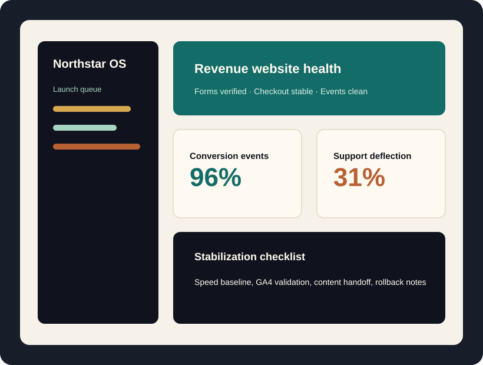
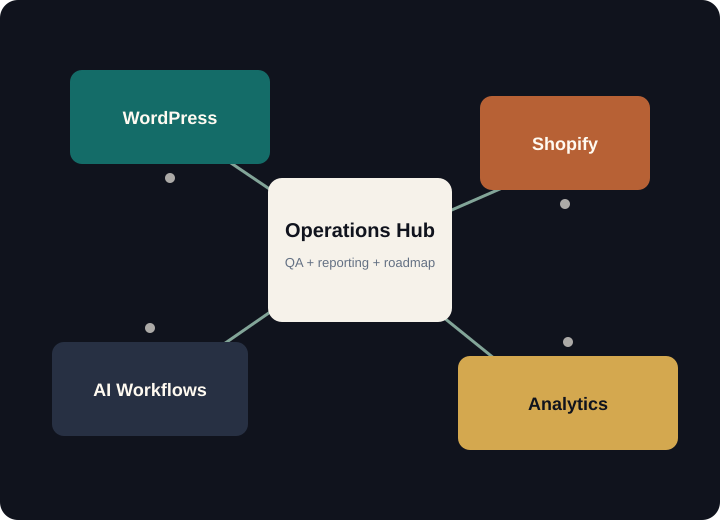

WordPress systems
Custom classic themes, editor compatibility, plugin integration, migrations, security hardening, and performance tuning.
Northstar Web Bureau
A premium WordPress and Shopify agency for teams that need sharper storefronts, steadier operations, cleaner analytics, and practical AI automation without platform lock-in.

Services overview
Northstar plans, builds, stabilizes, and improves websites after launch. The work spans custom WordPress themes, WooCommerce checkout fixes, Shopify Plus storefronts, AI chatbot planning, tracking cleanup, CRO experiments, and maintenance systems.
Custom classic themes, editor compatibility, plugin integration, migrations, security hardening, and performance tuning.
WooCommerce and Shopify product architecture, cart improvements, checkout strategy, analytics, and CRO roadmaps.
Maintenance, rescue response, reporting dashboards, AI workflow automation, and ongoing improvement management.
WordPress + Shopify
Northstar supports classic WordPress builds, custom themes, WooCommerce catalogs, Shopify storefronts, Shopify Plus workflows, CRM handoffs, measurement plans, and migrations where search visibility and order data cannot be treated casually.

Website rescue and repair
When a site is slow, broken, hacked, mis-tracking, or losing orders, Northstar starts with diagnostics: hosting, DNS, plugin conflicts, forms, payment flows, mobile breakpoints, tracking tags, and recent change history.
E-commerce growth
Work includes product page hierarchy, collection strategy, cart friction review, checkout messaging, event validation, merchandising blocks, retention surfaces, and reporting that separates useful signals from noise.
AI integration
Northstar plans chatbots, FAQ assistants, lead qualification, internal workflow automation, CRM handoff, and support deflection around approved content, clear boundaries, and human review paths.
Analytics + performance
Process overview
Discover the business model, constraints, traffic sources, and launch risks.
Audit the stack, tracking, speed, content structure, plugins, apps, and checkout flow.
Design, build, QA, launch, stabilize, report, and improve in measured cycles.
Selected project patterns
Problem: outdated WordPress theme and weak lead routing.
Solution: rebuilt page templates, tuned forms, clarified service hierarchy.
Outcome: faster content publishing and cleaner lead attribution.
Problem: Shopify collection pages hid decision-critical details.
Solution: redesigned filters, product cards, cart messaging, and event tracking.
Outcome: merchandising team could compare conversion by collection.
Problem: repetitive pre-sales questions overloaded staff.
Solution: AI FAQ assistant with approved answers, CRM handoff, and escalation rules.
Outcome: support leads arrived with cleaner context.
Maintenance plans
Plan options cover updates, backups, plugin testing, uptime monitoring, small content changes, monthly reporting, emergency response positioning, and roadmap recommendations.
FAQ preview
Yes. The first step is an access, backup, plugin/app, hosting, DNS, and analytics audit so the takeover is documented before changes begin.
Yes. Many projects involve both platforms, especially content-heavy brands with separate commerce operations.
Final CTA
Northstar starts with the current stack and the business outcome, then recommends the smallest responsible path to a better website operation.